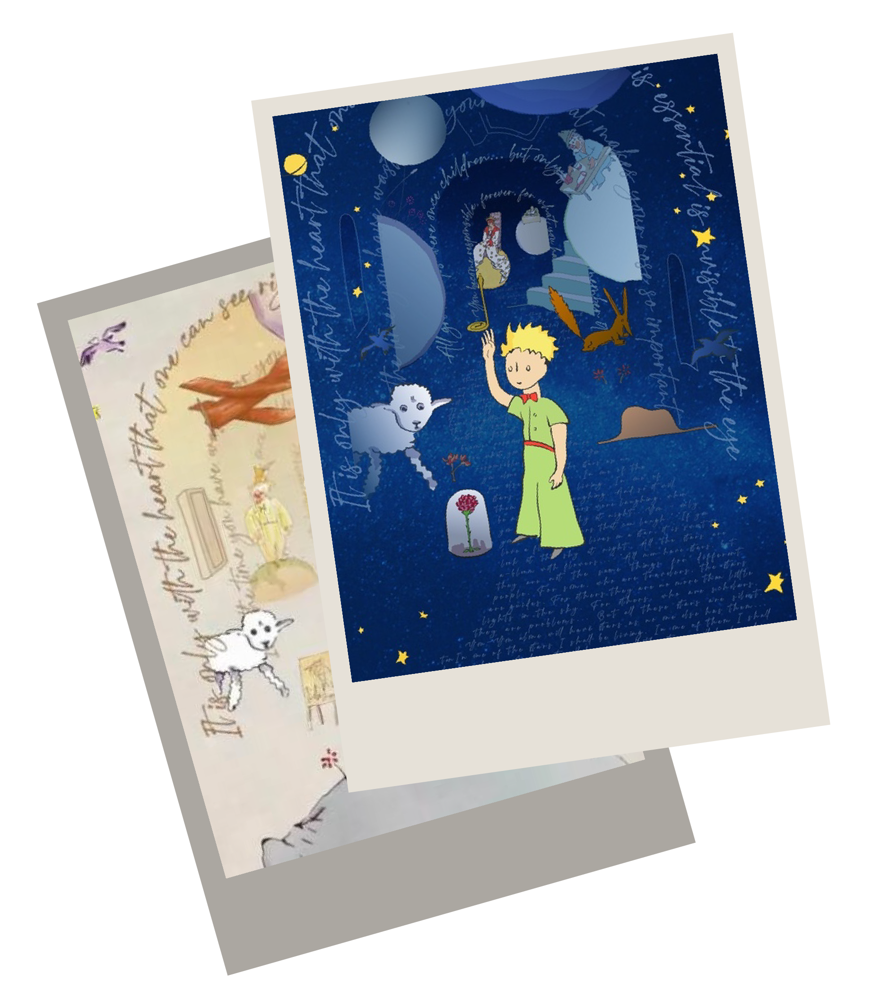
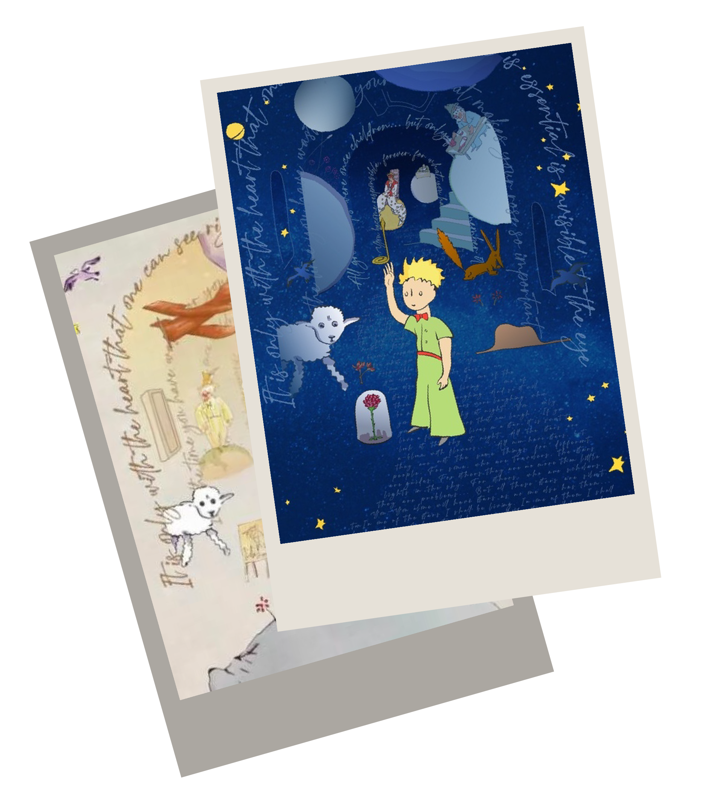
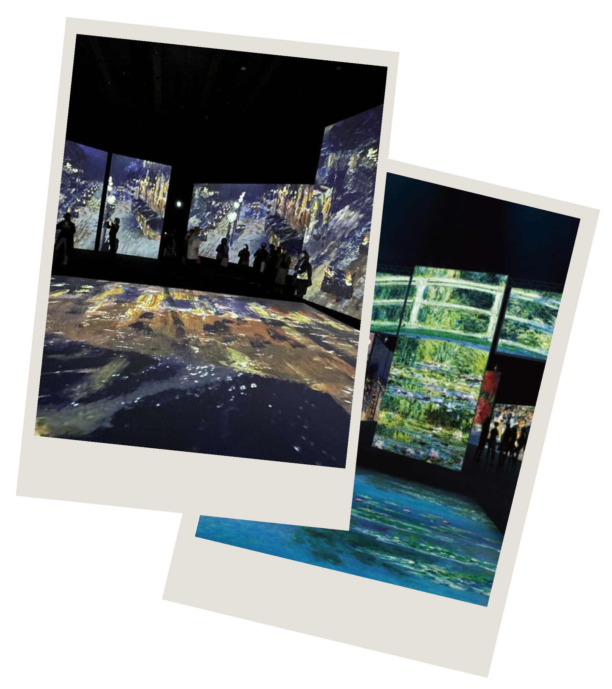

小王子的藝想世界 75週年特展
全新故事視角，從視覺藝術到驚喜引導的故事人聲、以及量身訂做的展場音樂環繞；透過奇幻氛圍的劇場空間設計與沈浸式互動投影聯手出擊，帶領大家再次和小王子一起來趟暖心療癒的星球旅行。 印象‧莫內 光影體驗展
窺影響未來百年的浪漫革命
深入淺出以時間為縱軸，編年解析印象派與當時歐陸社會政治發展的緊密關聯，並透過印象派主要風格、藝術家以及重要作品介紹，讓觀眾對印象派有基礎的認識，同時爬梳《印象‧莫內—光影體驗展》敘事脈絡，讓人更容易融入沈浸式投影區所營造的氛圍。
這次匯聚達利代表作品，包含風景及人物畫作、舞台劇布景、哲學議題想像、為致敬文藝復興時期畫家的創作、靈感的謬思女神-卡拉描繪等；本次最受矚目作品為達利研究十餘年的但丁《神曲》篇章創作，共計100幅，是達利對但丁「天堂」、「地獄」、「煉獄」三大詩集的詮釋。  

展覽時間：2021/12/29~2022/4/6 10:00-18:00 好評延長至 4/24
展覽地點：華山1914文創園區西1、西2館
你記得《小王子》的故事嗎？
當小王子第一次在撒哈拉沙漠與飛行員安東尼的相遇，他請求安東尼為自己畫一隻綿羊；小王子來自的B612
星球上有朵美麗而傲嬌的玫瑰、需要時常清理的火山與猴麵包樹。離開 B612 星球的旅行，小王子分別遇見
了國王、愛慕虛榮的人、酒鬼、商人、點燈人還有地理學家，在地球上遇到扳道工還有商販；小王子遇見
了狐狸、豢養了狐狸。最後小王子與安東尼告別，回到自己的星球。

展覽時間：2022/1/4~4/5
展覽地點：松山文創園區一號倉庫（台北市信義區光復南路133號）
v莫內橋: 以被稱為「莫內花園」的吉維尼故居為靈感，參考《睡蓮池上的拱橋》、《睡蓮》系列作品，實景重現莫
內花園中日式步橋的田園風光，提供觀眾沈浸印象派的浪漫情調。
V繪畫區: 以投影教學帶大人小孩一起入門，走入繪畫的世界，學習如何繪製莫內鍾愛的「日式步橋」等題材，更了
解莫內與印象派畫家們作畫的方式。
|